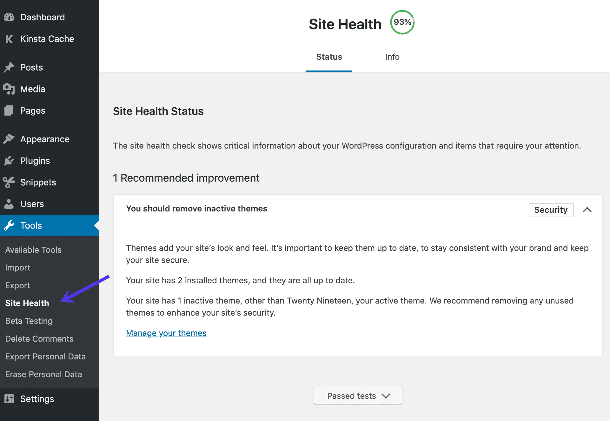
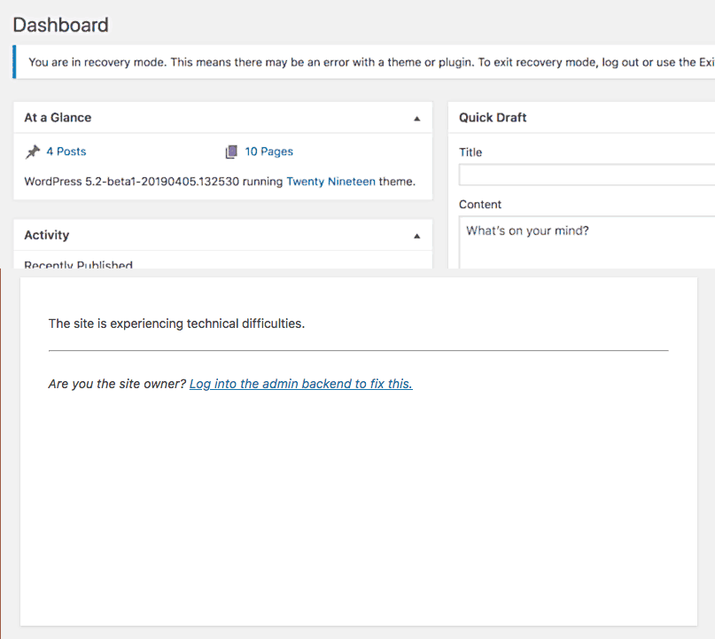

WordPress 5.2
Le novitá
Daniele Scasciafratte / @Mte90Net
Source: wordpress.org/news/2019/05/jaco/, kinsta.com/it/blog/wordpress-5-2/
Daniele Scasciafratte
- Co Founder/CTO Codeat
- Open Source Addicted
- Mozillian & Mozilla Reps & Mozilla TechSpeaker
- WordPress Core Contributor/Developer
- ClassicPress - i18n team lead & Founding Committee Member
- Project Translation Editor in WordPress Italia
WordPress 5.2 - 14 Novembre
327 contributor, 310 tickets
Site Health
Site Health
Site Health
Plugin Compatibility checks
WordPress will now automatically determine if your site’s version of PHP is compatible with installed plugins. If the plugin requires a higher version of PHP than your site currently uses, WordPress will not allow you to activate it, preventing potential compatibility errors.
PHP Version bump
The minimum supported PHP version is now 5.6.20.
PHP Error Protection

wp_body_open
>
Gutenberg performance
Privacy updates

Security Enhancements
Ticket #39309 was opened in 2017 describing a security issue with the WordPress infrastructure. Basically, if someone was able to compromise api.wordpress.org, they could issue fake updates and take control of user’s WordPress sites. Therefore, as of WordPress 5.2, it now checks for the existence of a x-content-signature header. If one isn’t found, it falls back to a signature file. Regardless of the method, the update packages are now digitally signed using Ed25519 and are base64-encoded.
Custom Error log path
Short circuit filter
WordPress 5.2 introduces new short circuit filters to WP_Site_Query and WP_Network_Query.
function myplugin_do_external_site_query( $sites, $site_query ) {
$response = wp_remote_get( 'https://my-remote-data-store/foo/bar' );
if ( 200 === wp_remote_response_code( $response ) ) {
$response = json_decode( wp_remote_retrieve_body( $response ) );
$sites = array_map( 'intval', $response->site_ids );
$query->found_sites = (int) $response->found_sites;
}
return $sites;
}
add_filter( 'sites_pre_query', 'myplugin_do_external_site_query', 10, 2 );
Siamo su Trello